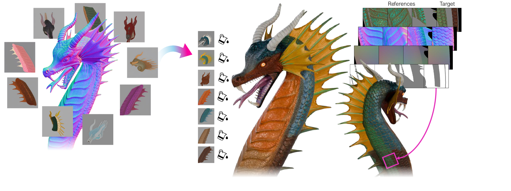

SIGGRAPH Asia 2026
GLOSS
Geometric Local Self-Similarity Learning for
Faithful Reference-Guided Texture Fill
Faithful Reference-Guided Texture Fill
1Princeton University 2NVIDIA Research
*Work done during an internship at NVIDIA.

GLOSS learns a shape-specific local texture generation and completion model from image priors and a single shape, guided by geometry-aware reference patches. It transfers any novel reference to the full target texture through patchwise inpainting, and generalizes to PBR materials and unseen meshes.
Abstract.
Using conditional image generators, texture artists can explore many single-view looks for an existing 3D
shape. Despite impressive progress, state-of-the-art generative methods still struggle to generate a full
object texture while closely adhering to fine scaled geometric detail and single-view references, and leave
little room for artist guidance. Furthermore, current automatic models lack the flexibility for artists to
explore multiple textures from varied sources in an interactive and controllable manner. Unlike methods trained
on large 3D datasets that generate full object textures from global guidance, our work explores a local and
less data-hungry approach to texture on a more specific class of texture. We leverage the geometric
self-similarity and geometry-texture correlation of natural and man-made shapes and train a shape-specific
local texture generation and completion model. This model learns from existing image model priors and a single
shape, and is guided by attending to a set of geometry-aware reference patches. The trained shape-specific
network can transfer any novel reference to the full target object texture through patchwise inpainting. We show
improved or comparable quality to strong image-conditioned texture generation baselines, suggesting local
texturing as a promising research direction. Our model also enables local geometry-conditioned texture
inpainting, guided by artist-selected references, and generalizes to PBR materials and unseen meshes for texture
transfer. We piloted our novel texture fill capability as a Blender addon with several 3D texturing
professionals who reported positive feedback on the model's controllability, practical usefulness, and creative
affordances.
Video.
BibTeX
@article{cai2026gloss,
title = {GLOSS: Geometric Local Self-Similarity Learning for
Faithful Reference-Guided Texture Fill},
author = {Cai, Chenyue and Hu, Anita and Lucas, James and
Rusinkiewicz, Szymon and Shugrina, Masha},
journal = {ACM Transactions on Graphics (SIGGRAPH Asia)},
year = {2026}
}